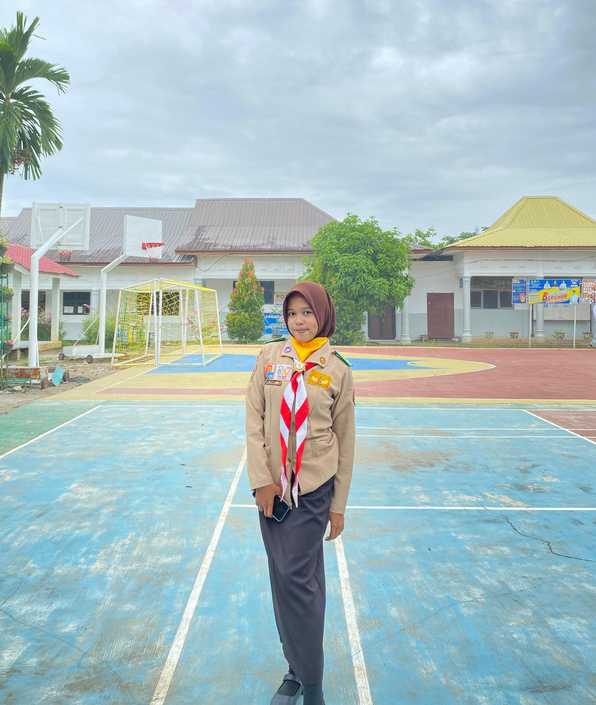

Dewan Ambalan
Dewan Ambalan Deblod Sundoro - Hj. Sawiyah Masa Bakti 2025/2026
Adly Arhamtsah Siregar
Pradana Putra
Cahaya Kasih Novitta Simatupang
Pradana Putri
Yusuf Anwar
Kerani Putra
Aulia Az Zahra
Kerani Putri
Muhammad Dhika Andhira Sinaga
Pemangku Adat Putra
Efani Syahrani
Pemangku Adat Putri
Rasya Allbani
Juru Uang Putra

Maya Shifa Azahra
Juru Uang Putri